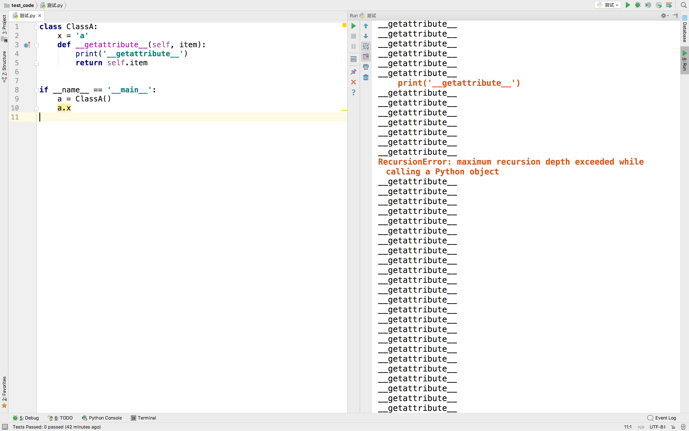
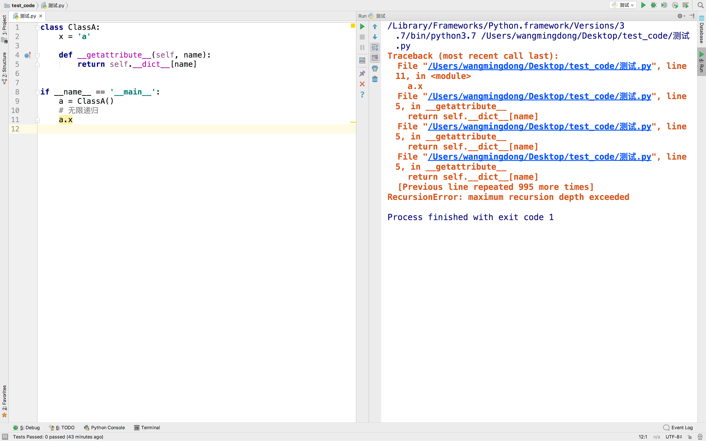
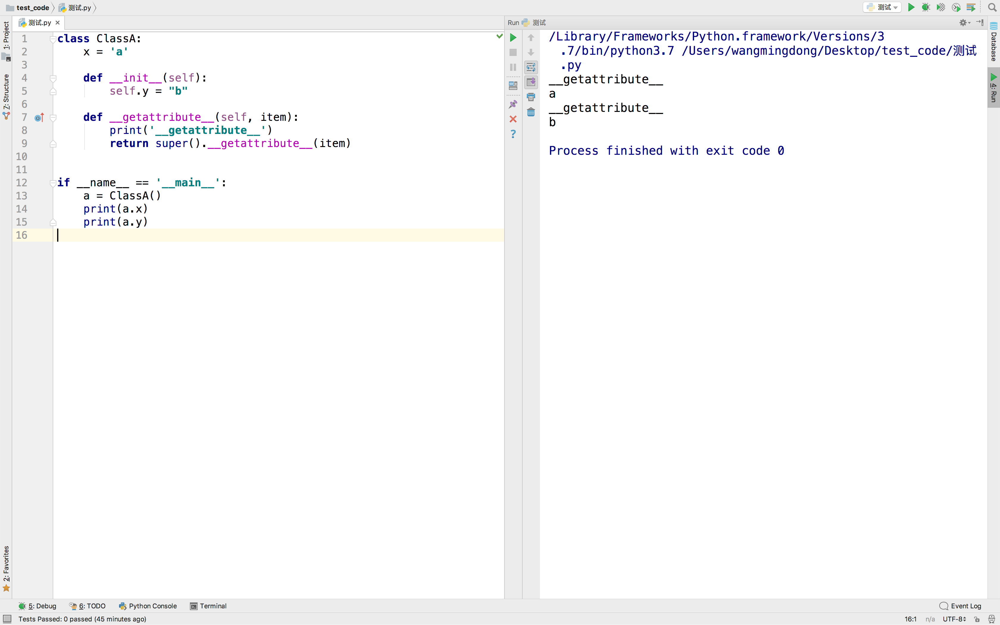

__getattr__和__getattribute__
1. __getattr__
__getattr__在当前主流的Python版本中都可用，重写__getattr__方法对类及其实例未定义的属性有效
也就属性是说，如果访问的属性存在，就不会调用__getattr__方法
这个属性的存在，包括类属性和实例属性
Python官方文档的定义
Called when an attribute lookup has not found the attribute in the usual places (i.e. it is not an instance attribute nor is it found in the class tree for
self).nameis the attribute name.
class ClassA:
x = 'a'
def __init__(self):
self.y = 'b'
def __getattr__(self, item):
return '__getattr__'
if __name__ == '__main__':
a = ClassA()
print(a.x) # a
# 使用实例对象直接访问实例存在的实例属性时,不会调用__getattr__方法
print(a.y) # b
# 使用实例对象直接访问实例不存在的实例属性时,会调用__getattr__方法
print(a.z) # __getattr__
2. __getattribute__
__getattribute__仅在新式类中可用，重写__getattrbute__方法对类对象或者实例对象的每个属性访问都有效。
Python官方文档的定义
Called unconditionally to implement attribute accesses for instances of the class.
示例代码：
class ClassA:
x = 'a'
def __init__(self):
self.y = 'b'
def __getattribute__(self, item):
print("__getattribute__被调用...")
return '__getattribute__'
if __name__ == '__main__':
a = ClassA()
# 使用实例对象直接访问存在的类属性时,会调用__getattribute__方法
print(a.x) # __getattribute__
# 使用实例对象直接访问实例存在的实例属性时,会调用__getattribute__方法
print(a.y) # __getattribute__
# 使用实例对象直接访问实例不存在的实例属性时,也会调用__getattribute__方法
print(a.z) # __getattribute__
print(ClassA.x) # 通过类对象调用属性，不会执行__getattribute__方法
运行结果：
__getattribute__被调用...
__getattribute__
__getattribute__被调用...
__getattribute__
__getattribute__被调用...
__getattribute__
a
3. 同时定义 __getattribute__和__getattr__
另外，当同时定义__getattribute__和__getattr__时，__getattr__方法不会再被调用，除非显示调用__getattr__方法或引发AttributeError异常。
示例代码（__getattr__方法不会再被调用）：
class ClassA:
def __getattr__(self, item):
print('__getattr__')
def __getattribute__(self, item):
print('__getatttribute__')
if __name__ == '__main__':
a = ClassA()
a.x
运行结果：
__getatttribute__
4. 注意
由于__getattr__只针对未定义属性的调用，所以它可以在自己的代码中自由地获取其他属性，而__getattribute__针对所有的属性运行，因此要十分注意避免在访问其他属性时，再次调用自身的递归循环。
当在__getattribute__代码块中，再次执行属性的获取操作时，会再次触发__getattribute__方法的调用，代码将会陷入无限递归，直到Python递归深度限制（重载__setter__方法也会有这个问题）
示例代码（无限递归）：
class ClassA:
x = 'a'
def __getattribute__(self, item):
print('__getattribute__')
return self.item
if __name__ == '__main__':
a = ClassA()
a.x
运行结果引发异常，提示达到最大递归深度

同时，也没办法通过从__dict__取值的方式来避免无限递归
class ClassA:
x = 'a'
def __getattribute__(self, name):
return self.__dict__[name]
if __name__ == '__main__':
a = ClassA()
# 无限递归
a.x

为了避免无限递归，应该把获取属性的方法指向一个更高的超类，例如object（因为__getattribute__只在新式类中可用，而新式类所有的类都显式或隐式地继承自object，所以对于新式类来说，object是所有新式类的超类）
修改代码（避免无限递归循环）：
class ClassA:
x = 'a'
def __init__(self):
self.y = "b"
def __getattribute__(self, item):
print('__getattribute__')
return super().__getattribute__(item)
if __name__ == '__main__':
a = ClassA()
print(a.x)
print(a.y)
运行结果正常：

5. 总结
__getattribute__和__getattr__都是对访问属性时的特殊操作
__getattr__只针对未定义属性的调用__getattribute__针对所有的属性运行